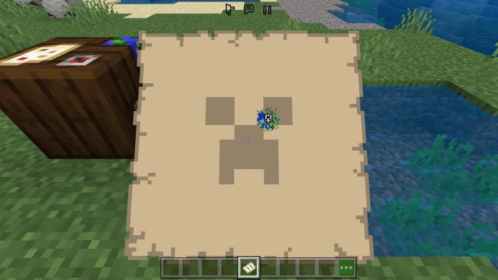

By CR24
Last Updated: April 23, 2022
Do you like Creepers and the color green? Then this pack is made for you!
This pack has green fire, green diamond tools, armor, a nice custom totem and much more!
This pack adds many things to your game. So.. lets start with the hotbar!
The hotbar has green hearts now! Cool, right?
And the Minecraft logo is different with the pack name
Green diamond tools
A nice totem
Green torches
Green fire in ovens
Now the best part! The items:

Next, there is green diamond armor and a green campfire!
And i added "Conected Glass" that is really usefull and beautiful!
Dark wool & dark carpets
Short swords
And here is the PVP Pack. It adds some cool things to make your PVP experience better!
V2.5 More Textures Update
Added lots of new textures!
New textures for beds:

New textures for item frames:
New textures for pumpkin and lantern:
New texture for the minecart:
New textures for the boats:
New textures and icons for maps:
New texture for the birch trapdoor:
New texture for the pumpkin blur:
New texture for the lectern:
New emote-wheel UI:
New UI textures in the settings screen and the main menu:
New background image in the character editor screen:
Removed the annoying help button from every inventory screen:

Added new feature that allows you to enable/disable the HUD on mobile devices without going into the settings!

PVP Overlay:
New dark texture for the diamond armor!
Beta:
New feature that allows you to see how many hunger points consumable items give
(Icon is glitching sometimes and languages not fully supported)